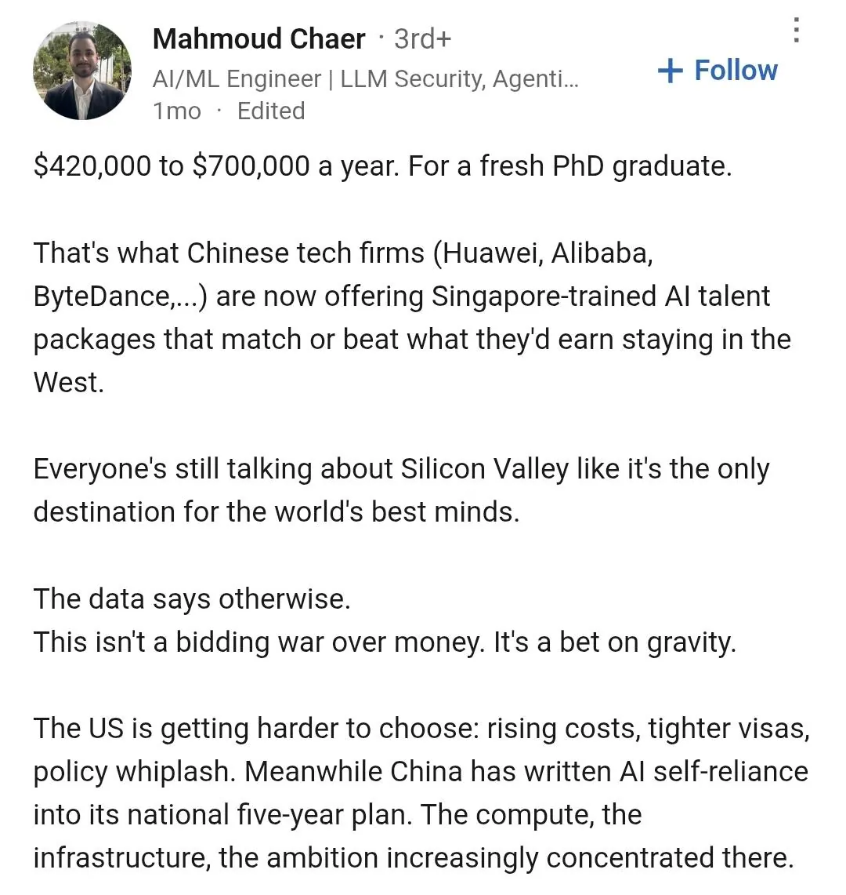

싱가포르 AI 박사 영입에
중국 최저임금 200년치
연봉으로 준다고 함.
일반 노동자 조지고 최상위 1%에 올인중.

싱가포르 AI 박사 영입에
중국 최저임금 200년치
연봉으로 준다고 함.
일반 노동자 조지고 최상위 1%에 올인중.
제발 저도 빨다가 뱉어주세요
2년만 빨아도 400년치...
AI 지금 돌아가는거 봐서는 아닐거 같은데?
댜오걍비
뭐 신생 산업이라 2년 빨고 뱉는다고 퇴물되고 다른 곳에서 일이나 연구 못하는 거 아닌데ㅋㅋㅋ
짐바브웨달러 200년치
월 최저임금을 기준으로 200년 동안 매달 받는다고 가정하여 계산한 상세 내역은 다음과 같습니다.
• 연간 총액 (1년치): 2,740위안 × 12개월 = 32,880위안 (약 624만 원)
• 200년치 총액 (위안): 32,880위안 × 200년 = 6,576,000위안
• 200년치 총액 (한화): 6,576,000위안 × 190원(환율 기준) = 1,249,440,000원
뭐 미국은 2000억이니 몇조니하는데 12억이면 엄청나게 큰것도 아닌거같은데?
대가리 수가 다르잖아
이번에 문샷에서 Kimi K3 개발했던 고등학생도 문샷 그만두고 미국 간다 한 거 보면 중국 AI 연구자들 대부분 미국으로 가고 싶어하는 거 같음. 중국에서도 미국 안 가게 붙잡으려면 연봉을 더더더 부를 수 밖에
여권뺏기 조만간 진짜로 보겠네 ㅋㅋㅋ
친구 여자친구가 금수저 중국인이라 들은건데ㅋㅋ 근데 ㄹㅇ임 전부 여권압수 이런건 아니긴한데.. 자식이 해외에서 결혼하는거 아니면 부모님이 해외여행하는건 존나 힘들다고 함
이미 시전함. 딥싴이랑 알리바바 주요 AI 연구진은 해외 나갈 때 중국 정부 허가 받고 나가야 함
연봉을 왜 더 줌
여권 뺏으면 그만인데
여권 뺏고 정신교육 시켜서 공산당 찬양 몇번해주면 밭갈던 천재들 다 튀어나와서 ai개발할듯
이게 왜 니 여권이야 ㄷㄷㄷ
칭화대 졸업생들 조차도 미국에서 박사하고 미국에서 취업하고 남는걸 희망함
중진국 함정의 가장큰 문제가 양극화가 심해진다는건데 그냥 심해 정도가 아니라
한쪽은 대졸 엘리트로 살아하고
한쪽은 중학교 겨우 나와서 단돈 천만원에 사람도 죽여주는 사람으로 살아가는것인데
중국은 이 양극화를 어떻게 견뎌 낼지 궁금하긴해
참고로 동남아나 남미가 치안이 개차반인 이유중 하나가
단돈 몇만원에 강도짓 하고 단돈 천만원에 사람도 죽여주는 내일이 없는 사람들이 너무 많아서 거든
못 견뎌서 터져나가는 현재진행형 같긴 한데...
같은 도시 안에서도 수입이 극단적으로 갈리더만
톈궁이 좆으로 보이냐?
그냥 없는일 만들면 됨
양극화는 이미 뭐 올만치 온지 좀 됐고
공포로 짓누르고 있잖아
천안문으로 이미 고개들면 죽는다는것도 학습됐고
우민화도 잘됐고
적어도 강력한 군사력과 군에 대한 통제력을 유지하는동안은 남미꼴은 절대 안남
12억이면 인공지능 상위 전문가면 박봉이긴 함

최저시급이 얼마나 창 났길래 200년치 ㅇㅈㄹ하는 거지
중국 최저시급 월 53만원정도
중국은 통계나 최저시급이나 의미가 없다... 양극화가 심해서 존나 저게 평균이라거 생각하면안돼 ㅋㅋㅋㅋㅋ 중국인들은 56개인가 소수민족 존나 광고해도 걍 인종이 황인종이라서그러지 미국의 엘리트백인이나 총쏘고 약빠는 흑인이나 다 동양인 외모를 하고 있을뿐임.
중국대겹은 앵간히 뺨칠정도로 돈존내 받음. 같은 공장장이어도 월급이 배는차이나는새끼들 ㅈㄴ많어 똑똑한야들도 많고 인간언저리 애들도 많고.
미국이 존나 중국인도 겐세이 해도 h-1b비자는 사실상 인도중국 인재들 데려고 만들었다는 생각이 들정도로 87퍼센트가 중국인 인도인임. 한국인은 고작 1퍼도 안됌. 나라에 득이되면 걍 전세계 인재를 국적불문 흡수하니까 저런 초강대국이 되는거지. 중국인 최저월급에 긁혀서 혀차고 있을시간에 걔넨 이미 미국비자받고 연간 수십만달러씩 받고 일한다. 핀트는 중국인시급이 아닌데 엉뚱한거에 꽂히네 ;;; 싱가폴이 존나 똑똑한전략 잘짜는거임 우리는 네팔미얀마 볼트조이개들 들여올때 쟤네는 유럽아시아아프리카 국가급인재 빨아먹음 ㅜㅜ
건너건너 아는 클로드 개발자도 연봉 300만불이라던데, 대충 50억이라고 하면 미국 기준으로도 백배는 넘네 ㅋㅋㅋ 아주 대단해들
최저임금 월 50만;
비교대상이 그렇구만. 연 약 10억이 200년치면 일반인은 연봉 500만원인건데.
1~2년 빨다가 뱉겠지